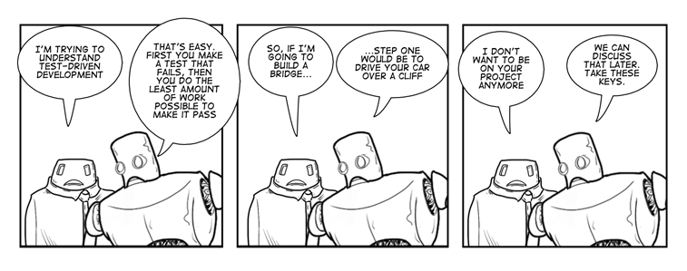

Duke's DBC Blog
I'm a guy who writes stuff like songs and rhymes and blog posts. I can sing and juggle (kind of) and my daughter thinks I'm hilarious. When I'm not being a dad or a performer, I handle social media, journalism, purchasing and project management duties for a small communications firm in West Michigan.
For me, Dev Bootcamp represents a chance to rewire my thinking. A lifetime fixed-mindset adherent, I'm trying to learn how to love learning, for all its bumps and sharp edges. I'm trying to love failure. And I'm trying to love feedback. Please let me know what I've done well. Or let me know what I screwed up, so I can grow from the experience.
This isn't my real blog. At least, not yet. One day I might buy a better domain name and turn this into something more glorious. Until then, I'm letting Wordpress do the grunt work for me, and focusing on the words. I update regularly about Dev Bootcamp stuff and my own learning/thinking process in hopes that someone may relate and take away something meaningful. Click the "Press Me" link in the header to read my other set of words.
PREVIOUS POSTS:
[none]
Testing, Take the Wheel

I learned a good rule of thumb after a pairing session last week. My guide told me it's good practice to test frequently while coding. How frequently? I get to write one line of code between tests for every year I've been programming. For me, that means I should be testing every single time I write something new. But why is this good practice? I decided to do some research into Test-Driven Development (TDD) and see if I could answer my own question. In the process, I learned about what TDD is and why more and more programmers are using it to improve their workflow and understand their code better.

At its core, TDD relies on making progress in small, controlled steps. Each step is like a trip around the circle. What makes TDD special is that the first step is ALWAYS failure. When I set out to write some code, TDD first asks me to understand that code enough to write a test for it that will fail. So if I wanted to create an addition method, I might write a test that would only pass if the method could add 2 and 2 to make 4. Before I write the method itself, I need to run that test and make sure it fails. If it doesn't, that means I didn't understand the concept well enough to write an accurate test for it, so maybe I need to do some more research or spend some more time playing with code in IRB before I'm ready to move on. Right from the start, my tests are helping me gauge my readiness to write the code itself.
Once I've written a test that fails when I run it, my next step is to write code that passes the test. It's not yet important to write great code. All I need to do is pass the test. So I can write a meandering, 15-line method, and if it passes my test when I run the code, I'm all set. This allowance for clumsiness and focus on only one small test at a time helps me stay sane. When I don't have to do something all at once, and I don't have to do it perfectly the first time, I tend to learn more from the process and treat it as more of a game to enjoy than a challenge to defeat or a benchmark to reach. I think a happy programmer is a good programmer, and small imperfect steps make me happy.
Finally, it's time to refactor. Now that the pressure is off and my little test is passed, I get to return to my clunky code and fix it up. Here I might research more elegant syntax, rework an overlong loop, or rethink how I named my variables. The point is that I've already passed the test, so I know that any improvement I can make without re-breaking the code is a solid one.
After I've refactored my code, I'm all done...with this step. Remember that all I've just described applies only to one little method, or one variable initialization, or one line of code that acts on that variable. I might have to run 15 tests before I've finished coding a single object class. But each step of the way, I know I won't have to worry so much about backtracking, because TDD takes care of the rework as each line of code is being written. Most importantly, I'll be able to fully explain what each line of code does, since I started off by writing a test that knows enough about the code to make it break. Overall, TDD is a fantastic way to keep the workflow manageable while ensuring it's always moving forward.

Can I add, just for the sake of a brief and elated rant, that this is how life works, too? We already have tons of idioms that mirror the principles of TDD: "Once begun, half done." "If at first you don't succeed, try, try again." "An ounce of prevention is worth a pound of cure." "A journey of a thousand miles begins with a single step." TDD is all about starting from where you are, wherever that is, and slowly building from there by asking a question, being dissatisfied with the answer, and going off in search of a better solution. This feedback process is how humans learn and grow, and it's nice to have some written rules for mirroring it in the context of code. I know TDD has its detractors, but I'm too new at this to shoot down a concept that works, so I figure I'll keep testing for now and wait until I can write a few lines of code at a time before I revisit whether or not I like TDD. In a few years' time, after a few thousand revolutions around the TDD "circle of life," I'm sure I'll at least have enough context to make a more informed decision. But that day is years off. I'll test that code when I come to it.